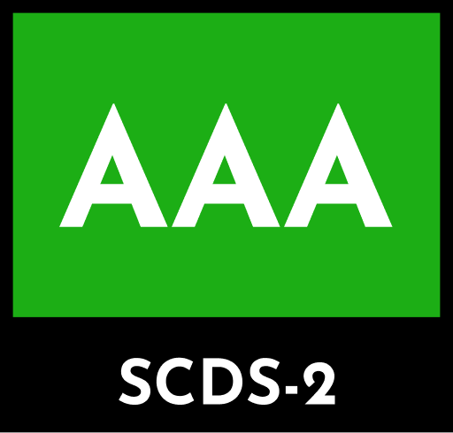

AAA
No AI usage.
SCDS describes how much synthetic material was used to make a product.
Take the questionnaire↓SCDS ratings roughly describe how much synthesis was used to make a piece of content, particularly regarding generative AI usage.
The score does not describe the quality of a product.
Read the scoring method →Clients of any product online want to know if AI was used in the creation process, and more importantly, what AI was used for. A SCDS rating is an easy-to-get disclosure for your material that satisfies that need in an easy-to-understand way.
Answer each question to determine a rating.
The questionnaire directly determines a three-letter rating. The first letter describes the frequency of AI usage: A (absent), O (occasional), or F (frequent). The second describes AI’s role: A (absent), I (implementation), P (planning), or E (both). The third describes scope: A (absent), B (backend), or E (experience).
An AAA rating means no AI was used anywhere in development. If AI was used, the remaining answers combine to create one of the twelve O or F ratings. This tool is a disclosure aid, not a certification.